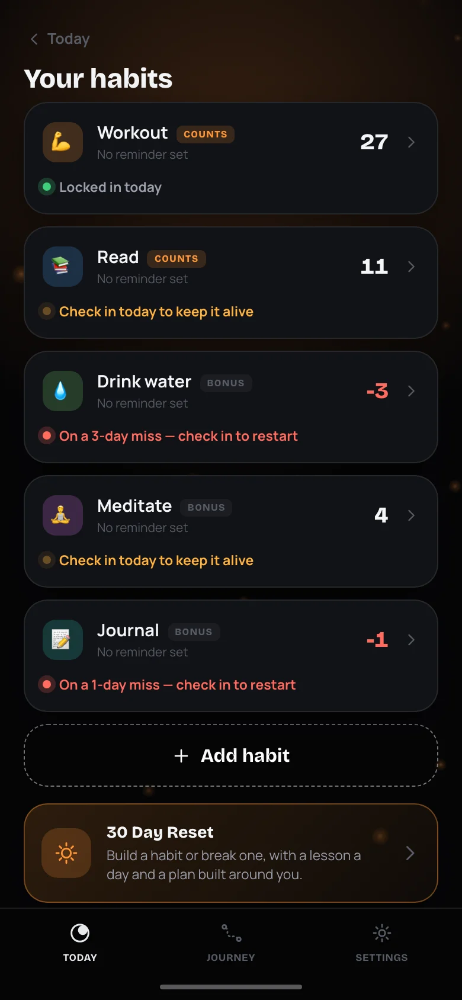
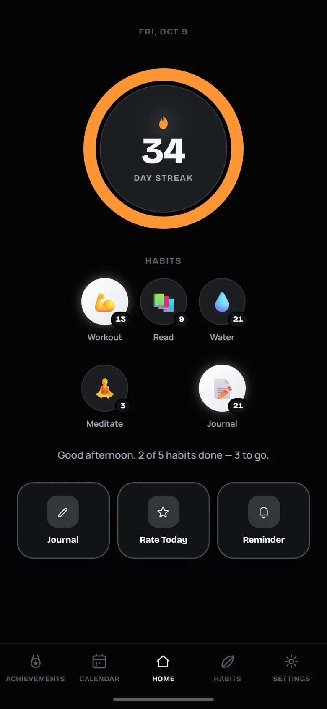
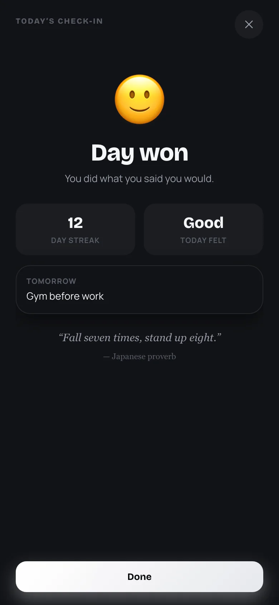
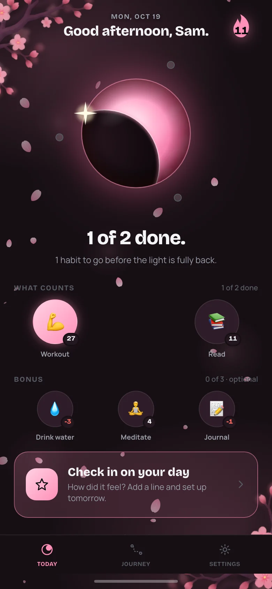
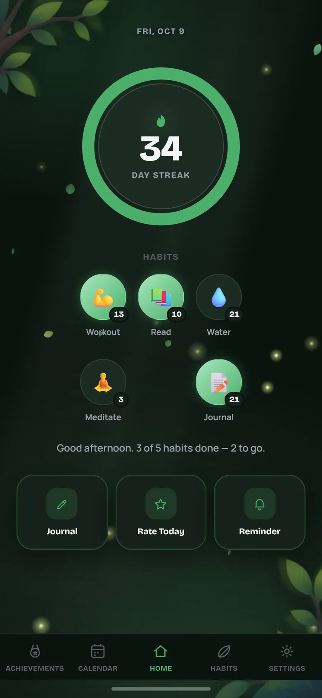
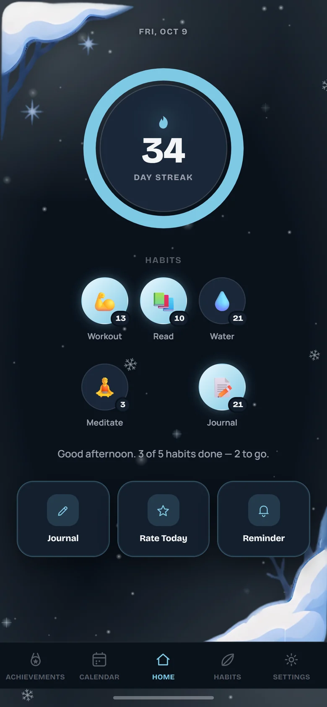
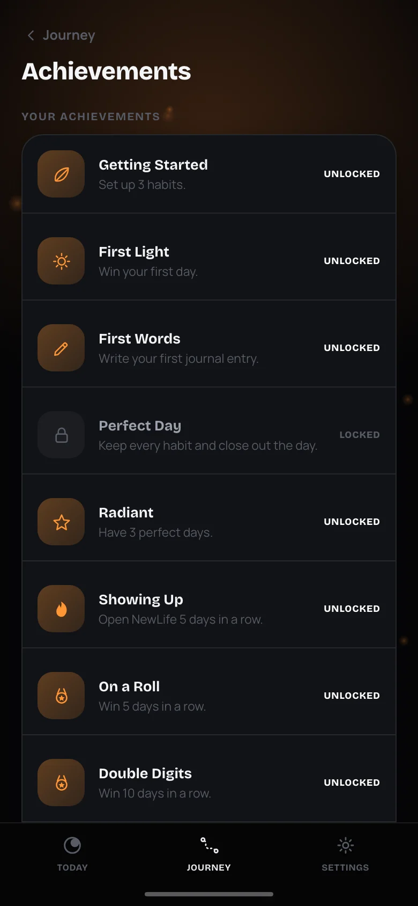
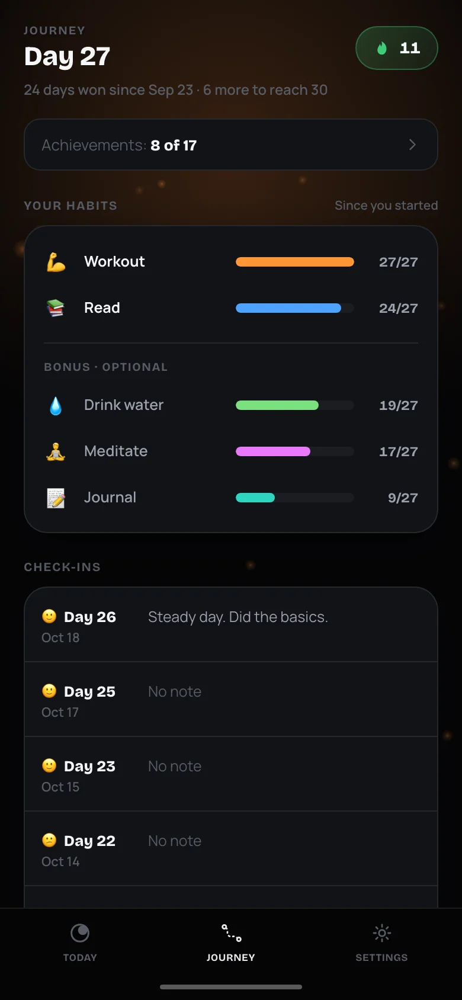

Win the day.
Then win tomorrow.
The habit tracker that tells you the truth. Miss a habit and your streak counts down. Check in and you start fresh. It's honest, and it feels good to show up.
No account. No sign-up. Your data stays on your phone.

Your streak can go negative.
Most habit apps quietly reset a missed streak to zero, and you never see what slipped. NewLife counts it: −1, −2, −3, in red, right where you'll see it.
Then you check in and start fresh. No guilt trips, no lectures, just a clear picture of where you stand today.

You decide what wins a day.
Every day is either won or lost, and you choose what counts: do everything, do just the habits you pick (even one), or stay clear of something you are trying to quit. Win the day and the light comes back. Miss it and your streak counts down until you win again.
You can change the rule whenever you like. Days you already played keep the rule they were played under.

Close out the day, on purpose.
At the end of the day, take a minute. Pick the face that fits, note what got in the way if the day slipped, and write a line if you like. Then set one thing for tomorrow.
It never decides whether you won. It is just a calm, private way to finish the day, and your check-ins collect in the Journey tab.
Habits that feel like something.
Cherry Blossom, Forest and Winter come alive with falling petals, fireflies and snow, alongside the calm Night and Day themes.

Cherry Blossom
Petals on the breeze

Forest
Fireflies at night

Winter
A quiet snowfall


Every unlock gets a moment.
Seventeen achievements, from setting up your first three habits to a hundred-day win streak. Each one pops with a little celebration when you earn it.
The Journey tab keeps it short: your streak, how often you keep each habit, your recent check-ins and the calendar, with deeper stats a tap away.
On your Home Screen, not in your way.
Four widgets, including one for the Lock Screen: your streak, today's habits, today's light and your 30 Day Reset. See where you stand every time you unlock your phone, without opening anything.
Optional reminders for each habit, plus a nudge if you haven't checked in by the end of the day.
Your habits are yours.
No account
Open it and start. No email, no password, no sign-up screen.
Works offline
Everything runs on your phone. No internet needed, ever.
Stays on your phone
Your habits and journal are stored on your device. A code or Face ID can lock the journal.
Questions about NewLife.
How much does NewLife cost?
NewLife is a subscription app. Pricing, and any free trial, are shown in the app before you subscribe. You can manage or cancel your subscription any time in your Apple ID settings.
Do I need an account?
No. There is no sign-up. NewLife works as soon as you open it.
Where is my data stored?
On your iPhone. NewLife does not send your habits or journal anywhere. Because of that, deleting the app deletes your data, and syncing between devices is not available yet.
What makes a won day?
You choose. Do everything: every habit has to be done. Do the ones I pick: only the habits you mark count, and the rest are a bonus. Or stay clear: your check-in on a 30 Day Reset to break a habit decides the day. You can change it any time in Settings.
What happens when I miss a habit?
Your streak for that habit goes negative and counts down for each missed day (−1, −2, −3…). Check in and it starts fresh at 1. Nothing is hidden and nothing is judged.
What is the 30 Day Reset?
An optional program to build a habit or break one: a short lesson and a small move each day, a daily check-in, and an urge timer when it gets hard. It is a self-improvement tool, not medical advice or treatment. If you are struggling, please reach out to a professional or a helpline.
Is the journal encrypted?
The journal is protected by a lock code and optional Face ID or Touch ID, and it only exists on your phone. It works like a privacy screen for anyone who picks up your phone.
Does it work on Android or iPad?
NewLife is made for iPhone. Other platforms may come later.
How do the widgets work?
Press and hold your Home Screen, tap +, search for NewLife and add the streak, today's habits, today's light or 30 Day Reset widget. Open the app once and they will fill in.
Start with today.
Win the day. Then win tomorrow.